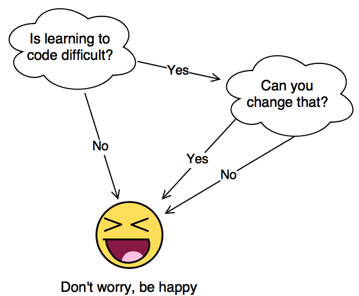

Conditionals
If not that, then… ?
© We Can Code IT, LLC
An Insightful Process

This diagram isn’t quite right. If you don’t think learning to code is difficult, then you miiiight not get it yet.
Conditional Statements

-
Conditional statements are one of the ways that we control the flow of a program.
-
We control the flow by making decisions.
-
Let’s walk through the flow control diagram above.
Heroes fight battles!!
-
Let’s revisit our hero Spartacus in our HelloWorld program.
-
If it’s not already, open your HelloWorld program in Visual Studio.
-
Spartacus, like all heroes, makes his living fighting battles.
-
We will use conditional statements to help our hero do the following:
-
Choose which battle to fight
-
Choose which soldiers to take into battle.
-
We should all be here

-
Volunteer time
-
Let’s start by Commenting out part ten.
if this then…..
-
An if statement is exactly what it sounds like.
-
We use if statements in code like we do in every day life. If the temperature is at least 80 degrees, I will go to the beach.
-
Putting the above statement in code would look like this: if(temp >= 80)
In C#, we would say:
int temp = 81;
if (temp >= 80)
{
Console.WriteLine("I am going to the beach.");
}Where to go
-
Now let’s use the if statement to give our hero direction.
-
Spartacus wants to go to battle, but only wants to march to the closest city.
-
Our if statement in spoken language might read: If the city is less than 125 miles away, then I will march there.
Add the following code below part ten:
-
Once complete, execute the code with the following inputs:
1264055 -
Obviously our scope is small. This example is to show the working of the concept in its simplest form.
-
It’s important to understand each if in this example will be executed if the conditional statement is met.
-
You may have noticed we included a few items we have not yet discussed, so let’s review them.
Strings again?
-
Remember, we use the
Console.ReadLine()to receive input from the user via the console. -
C# reads all input from the console, regardless of format, as a string. So if we enter the number 42, C# reads it as a string.
-
C# is able to look at input from the user, and decide if that input is a
string,int,double,floatetc.. -
We tell C# to review and format the input by using the Parse method.
-
In our example, we use
int.Parseto tell C# to convert the console input to an int. -
The same could be and should be done for
double,float, etc..
double and save it to a variable, what would our code look like?
Who is going to march?
-
Now we need to make sure Spartacus has the best soldiers to go to battle.
-
Our statement in spoken language would look as follows: If a soldier is an officer, or is 26 years old or younger, they will go to battle, else they will stay home.
-
We are introducing a new type of if called and if else statement. Let’s review the following:
Console.WriteLine("What is your rank?");
string rank = Console.ReadLine();
Console.WriteLine("What is your age?");
int age = int.Parse(Console.ReadLine());
if ((rank == "officer") || (age <= 26))
{
Console.WriteLine("Get your gear, kiss your family goodbye,
put on your marching boots.");
}
else
{
Console.WriteLine("Sorry, you are staying home.");
}
- Notice we are using the || logical operator.
- Comment out the previous code, and add the following code to your program
Console.WriteLine("What is your rank soldier?");
string rank = Console.ReadLine().ToLower();
Console.WriteLine("What is your age soldier?");
int age = int.Parse(Console.ReadLine());
Console.WriteLine("What is your job soldier?");
string job = Console.ReadLine().ToLower();
if ((rank == "officer") || (age <= 26))
{
Console.WriteLine("Get your gear, kiss your family goodbye,
put on your marching boots.");
}
else if ((job == "cook") || (age >= 26))
{
Console.WriteLine("My army has to eat. Pack your pots and pans.");
}
else
{
Console.WriteLine("Sorry, you are staying home.");
}
- Execute the code twice with the following inputs: officer 26 then corporal 24.
And the fun continues
-
So far we have reviewed and seen examples of the if and if else statements.
-
We know if statements WILL be executed, and their values returned if the conditional statement is met.
-
We know if else statements will be executed and the else will be executed if the conditional statement is NOTmet.
-
Finally, we are going to learn about the if else if statement.
-
Let’s rewrite our prior if else statement into an if else if.
If else if…
Console.WriteLine("What is your rank soldier?");
string rank = Console.ReadLine();
Console.WriteLine("What is your age soldier?");
int age = int.Parse(Console.ReadLine());
Console.WriteLine("What is your job soldier?");
string job = Console.ReadLine();
if ((rank == "officer") || (age <= 26))
{
Console.WriteLine("Get your gear, kiss your family goodbye,
put on your marching boots.");
}
else if ((job == "cook") || (age >= 26))
{
Console.WriteLine("My army has to eat. Pack your pots and pans");
}
else
{
Console.WriteLine("Sorry, you are staying home.");
}
The switch is on!!
-
The last remaing tool we will cover in this section is the Switch Case.
-
Sometimes, we can use a
switch/casestatement to replace severalif/elsestatements. -
Let’s say we are categorizing our army based on the following groups: infantry, archers, catapault, supply.
-
We will use a soldiers job to decide what weapon they use.
- Here is an example of a Switch Case. Add the following code to your Hello World project.
switch(job)
{
case "infantry":
Console.WriteLine("You will carry a sword.");
break;
case "archer":
Console.WriteLine("You will carry a bow and arrow.");
break;
case "supply":
Console.WriteLine("You will carry pots and pans.");
break;
case "specialist":
Console.WriteLine("You will operate the catapult.");
break;
default:
Console.WriteLine("You will ride horseback.");
break;
}
We should all be here
-
Execute your code to ensure you get the results you are expecting.
-
Ensure you test all cases including the default.
Switch case explained
-
Switch case statement is separated into four sections
-
The switch method which takes a variable. This variable acts as part of a conditional with the case statement.
-
The case statement whose value is compared to the variable in the switch method.
-
The output statement will be delivered when the comparison is true.
-
The break statement which has the effect of exiting the statement if the case statement is true.
-
Its important to note if none of othe case statments are true, the default case WILL be executed.
-
-
For many students the switch case seems pretty daunting, but with practice will be a very useful tool.